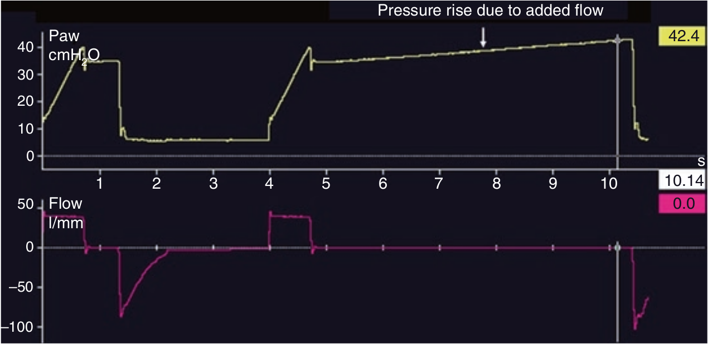

تحت شرایطی که ورود مداوم جریان گازی به داخل مدار ونتیلاتور وجود داشته باشد مانند نیتریک اکسید استنشاقی و یا نبولیزر مداوم، فشار پلاتو در مانور انسداد پایان دمی دچار افزایش پیشرونده میگردد. بنابراین در هنگام اندازه گیری فشار پلاتو باید این گونه سیستم ها را غیرفعال کرد و یا از مدار خارج نمود.

برای اندازه گیری فشار پلاتو با مانور انسداد پایان بازدمی:
۱ - هیچگونه نشتی در مدار نباید باشد
۲ - فشار پلاتو باید با ثبات باشد
۳ - بیمار باید کاملا شل باشد
۴ - منشاء گازهای اضافی مانند نبولیزر باید غیر فعال شود
۵ - تمام موارد فوق